Directed graphs
Directed graphs (digraphs) are graphs where every edge is directed. Edge \((a,b)\) goes from \(a\) to \(b\), but not the other way around.
It can be applied to dependency and scheduling problems. When representing it in concrete implementations, we tend to keep in and out edges separately
Properties
If a simple directed graph has \(m\) edges and \(n\) vertices, then \(m \leq n \cdot (n-1)\), since every vertex can connect to every other vertex bar itself
There is more terminology specifically about digraphs:
- One vertex is said to be reachable from the other if there exists a directed path from the other to it
- A digraph is said to be strongly connected if each vertex is reachable from every other vertex
Strong Connectivity Algorithm
We can identify strong connectivity by running DFS on a chosen vertex \(v\) in \(G\) and \(G’\), where \(G’\) is \(G\) but with the directed edges reversed.
- Firstly, we perform DFS from \(v\) in \(G\). If there is a vertex \(u\) not visited, then \(G\) is not strongly connected. Otherwise, it shows that there exists a path from \(v\) to every other vertex.
- Next we perform DFS from \(v\) in \(G’\). Again, if there is a vertex \(u\) not visited it is not strongly connected. Otherwise, it shows that there exists a path from every other vertex to \(v\).
- If both DFS show that there is no such vertex \(u\), then \(G\) is strongly connected.
This has a running time of \(O(n+m)\).
It is also possible to create maximal subgraphs with every vertex being reachable in \(O(n+m)\) time, but this is more involved.
Transitive closure
Given a digraph \(G\), the transitive closure of \(G\) is the digraph \(G^*\) such that
\(G^*\) has the same vertices as \(G\)
If \(G\) has a directed path from \(u\) to \(v\), and \(u \neq v\), then \(G^*\) has a directed edge from \(u\) to \(v\)
The transitive closure provides reachability information about a digraph, allowing us to answer reachability questions fast.
Informally, this means that every pair of vertices with a path between them is adjacent in a transitive closure.

Computing with DFS
One way of computing the transitive closure of a graph is to perform DFS on each vertex in graph to identify every reachable edge from it, then setting edges between them.
Every run of DFS will take \(O(n+m)\) time and because we are running it on every edge so this will take \(O(n \cdot (n+m))\) time.
For sparse graphs, adjacency list/adjacency map representations, or very large graphs (many nodes), DFS is a good solution.
Floyd-Warshall Algorithm
Another way to compute the transitive closure is to use the Floyd-Warshall algorithm, a dynamic programming solution.
The \(G^*\) graph starts off identical to \(G\) with only the initial edges. We then add a direct edge between nodes which have a path of length 2 between them (only one other node separating the two nodes).

With each iteration, we pick a “pivot” (this is my own way of saying it) node \(k\) and we loop through all \(i\) and \(j\) to check if there is an edge \(i\rightarrow k\) and \(k\rightarrow j\) – if this is true, then we insert an edge \(i \rightarrow j\).
After every edge is inserted, this forms a new path of length 2 between two nodes, which is then considered in a later iteration.
Algorithm FloydWarshall(G)
Input: digraph G
Output: transitive closure G* of G
i <- 1
for all v in G.vertices()
label v with i
i <- i + 1
G_new <- G
for k <- 1 to n do
for i <- 1 to n(i != k) do
for j <- 1 to n(j != k) do
if G_new.areAdjacent(i,k) & G_new.areAdjacent(k,j) & !G_new.areAdjacent(i,j)
G_new.insertDirectedEdge(i,j,edge_k)
return G_new
We say this is a dynamic programming algorithm because we only have to consider paths of length 2 and update the graph immediately. By resolving the transitive closure for every \(k\) with every other \(i\) and every other \(j\), the end result is one that considers all possible closures and the final graph is transitively closed.
FW in Python
I found a good explanation of this algorithm on Youtube which also includes a github gist of the Python implementation of this algorithm. This takes an adjacency matrix M which encodes the graph
def warshall(M):
n = M.nrows()
W = M
for k in range(n):
for i in range(n):
for j in range(n):
W[i,j] = W[i,j] or (W[i,k] and W[k,j])
return W
Speed Analysis of FW
The running time is dominated by the 3 for-loops. If we assume that the areAdjacent method takes \(O(1)\) time (which is true for adjacency matrices) then this algorithm is of \(O(n^3)\) time.
For dense graphs, and adjacency matrix representations, the Floyd-Warshall algorithm is better than using DFS. Additionally, it is also algorithmically simpler.
Topological ordering
A topological ordering of a digraph is a numbering \(v_1,\ldots,v_n\) of the vertices such that for every directed edge \(v_i,v_j\), we have that \(i<j\).
Theorem. A digraph has a topological ordering if it is a directed acyclic graph (DAG – has no directed cycles). Having cycles would informally be self-dependencies
To prove the theorem above, we need to prove both ways. Showing that a digraph with a topological ordering contains no directed cycles is trivial (left to right). We will employ DFS to prove the other way (right to left).
Topological Sorting with DFS
This DFS implementation of topological sorting consists of two functions that are overloaded.
- The first function takes a graph
Gand starts labelling all vertices asunexplored.- Then for every vertex, if the label is
unexploredwe call the second function.
Algorithm topologicalDFS(G) // First function
Input: DAG G
Output: Topological ordering of G
n <- G.numVertices()
for all u in G.vertices()
setLabel(u, "unexplored")
for all v in G.vertices()
if getLabel(v) == "unexplored"
topologicalDFS(G,v) // 2nd Function
Here we set the starting vertex v to visited, and then for all edges that originate from v we check if the destination vertex w is unexplored.
Algorithm topologicalDFS(G,v) // 2nd Function
Input: graph G and a start vertex v of G
Output: Labelling of the vertices of G in the connected component of v
setLabel(v, "visited")
for all e in G.outEdges(v)
w <- opposite(v,e)
if getLabel(w) == "unexplored" // e is a discovery edge
topologicalDFS(G,w)
setLabel(e, "cross")
// else we do nothing
Label v with topological number n
n <- n - 1
Taking the following graph as an example, let’s start at vertex A. We first begin by labelling vertex A as visited and we loop through all the vertices that A has an edge to.

If any are unexplored, then the edge has not been traversed before and we call the 2nd function on the destination vertex recursively, in this case lets say the loop starts with G. Then the same thing happens to G (as it is a recursive call).
This will continue until we arrive at a vertex D with no outgoing unexplored edge.
- When this happens, we label
Dwith the current number for the topological ordering (this number starts at \(n = \text{number of vertices in G}\)). After which, we decrementn. - Then as an effect of the recursive calls, the algorithm backtracks to the previous vertex \(d_x\) (i.e
J).- All remaining outgoing edges of \(d_x\) are checked and there will be further recursive calls to the 2nd function if any edges have not been traversed.
- The next vertex with no outgoing edge \(d_{n-1}\) will be labelled with
n-1. In our example this isJ.
- This goes on, and we will notice that after every exit from a recursive call, there will always be a vertex with no outgoing unexplored edge.
Hence, we will be able to arrive at a topological ordering of \(G\).
Note. You may observer that if we start at a different root vertex (for example if we started from
Binstead ofA), the topological ordering will be different. Hence, it is possible for one DAG to have multiple topological orderings.